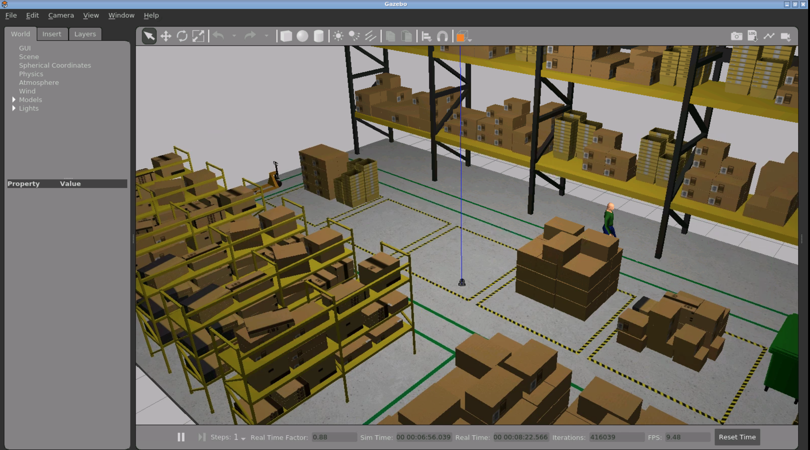
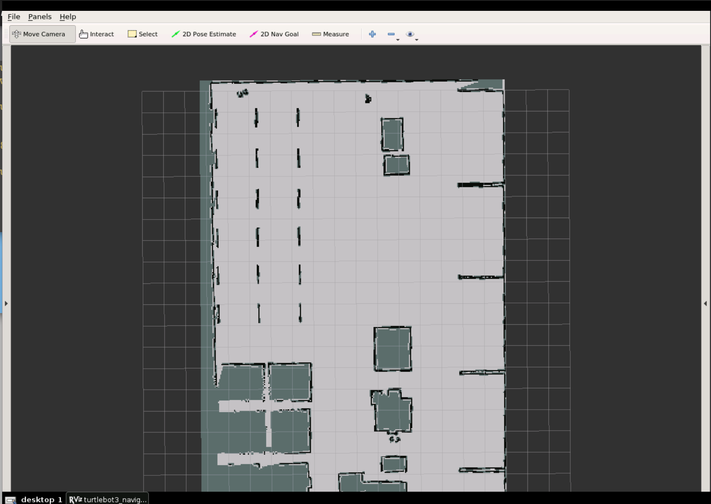

Warehouse simulation

This is a simulation of a warehouse. The objettive is to demostrate path plannning with obstacles

This is a simulation of a warehouse. The objettive is to demostrate path plannning with obstacles

Above shows output of mapping
Using gmapping a map file is created by 2d lidar. This represents a 2d plane of the the static obstacles within the warehouse. Using gmapping this map is served and used for localization by the robot.